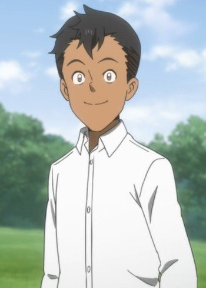

Shinei Ueki is a Japanese voice actor. He currently voiced Don from The Promised Neverland and Boris from How Not to Summon a Demon Lord.
- Gender: Male
- Birthday: Feburary 21
- Hometown: Kyoto, Japan
- Hobbies: Tennis, Basketball, and Guitar

|
|---|
|
Shinei Ueki is a Japanese voice actor. He currently voiced Don from The Promised Neverland and Boris from How Not to Summon a Demon Lord.
|
|---|
|  | Don | The Promised Neverland | Don is an orphan who lives at the Grace Field House. He is a cheerful but impulsive boy who cares greatly about his family. He is a cheerful, energetic, happy, and social boy who is always friendly toards everyone. He is very careless, rowdy, less inclined and talkative. He holds a great deal of love towards his siblings, is fircely protective and cares deeply about them. He is impulsive and driven by his feelings. |
Go Back to Main Page |
Go Back to Homepage |
|
|
|
OR |
|